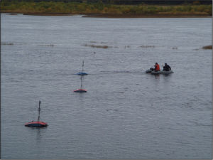
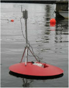

Гидроакустический высокочастотный программно-технический комплекс "NetCor".
Комплекс “NetCor” предназначен для количественной оценки запасов проходных рыб (производителей и покатной молоди) гидроакустическим методом в реальном и отложенном времени в научных и прикладных рыбохозяйственных работах на реках.

Парадигмой создания системы является построение сети разнесенных гидроакустических регистраторов горизонтального секторного обзора, управляемых по радиоканалу пакетной передачи данных в нелицензируемом диапазоне радиочастот, и возложение метрологического обеспечения метода на программное обеспечение системы.
Комплекс состоит из сети плавучих гидроакустических высокочастотных многолучевых станций связанных по радиоканалу пакетной передачи данных с береговой компьютеризированной контрольно-измерительной системой. Радиопередача ведется в нелицензируемом диапазоне радиочастот ISM 2.4 ГГц с использованием трансиверов nanoLOC (стандарт IEEE 802.15.4a). Акустическое зондирование может осуществляться в горизонтальной плоскости под любым заданным углом к поверхности воды, в вертикальном направлении в направлении дна или поверхности воды.
Основные характеристики комплекса «NetCor»:
| Электрическая мощность на антенне (переключаемая), Вт | 40 - 80 |
| Рабочая частота, кГц | 455 |
| Ширина характеристики направленности одного луча на уровне -6 дБ, град. | 10 |
| Ширина многолучевого сектора на одной станции в плоскости веера лучей, град. | 80 |
| Частота следования посылок, Гц | 4 - 0.5 |
| Длительность посылки, мс | 0.1 - 0.6 |
| Максимальная дистанция регистрации одиночной рыбы, силой цели -50 дБ (8 - 10 см), м | 20 |
| Глубина места регистрации одиночной рыбы в горизоньальном режиме, м | < 1 |
| Дистанция устойчивой радиосвязи (в зависимости от уровня помех и используемых антенн), м | до 300 |
| Дистанция предельной радиосвязи (в зависимости от уровня помех и используемых антенн), м | до 1000 |
| Число плавучих гидроакустических высокочастотных многолучевых станций в сети | до 16 |
Оборудование.
Аппартная часть системы состоит из береговй компьютеризированной контрольно-измерительной станции (модуль "Master") и сети автономных гидроакустических станций (модули "Slave"). Устройство “Slave”, предназначенное для запуска генератора по внешней команде, поступающей по радиоканалу, оцифровки огибающей эхосигнала и передаче значений оцифрованного входного напряжения на устройство “master”, функционально состоит из следующих блоков:
- ультразвуковой генератор;
- приемник с детектором огибающей эхосигнала;
- шестиэлеметная гидроакустическая антенна;
- коммутатор;
- управляющий микроконтроллер (ATmega32L);
- трансивер стандарта nanoNET (nanoPAN 5361);
- АЦП на основе AD976A;
- стеклопластиковая плавучая платформа грузоподъемностью 30 кг;
- поворотно-выдвижное устройство для гидроакустической антенны;
Гидроакустический программно-технический комплекс “NetCor” для управления системой и передачи цифровых данных с сети модулей “slave” на модуль “master” береговой контрольно-измерительной станции использует беспроводную технологию Nanonet, разработанную фирмой Nanotron Technologies Gmbh (Германия).
Ниже приведен список основных особенностей данной технологии:
- для передачи символов данных (бит) используются электромагнитные сигналы с плавно изменяющейся частотой (CSS-модуляция, Chirp Spread Spectrum). При этом для передачи двоичного символа может использоваться сигнал с увеличивающейся частотой, сигнал с уменьшающейся частотой и/или отсутствие сигнала. Также стандарт предусматривает возможность кодирования символов в четверичной (а не двоичной) системе счисления – в этом случае для кодирования нуля, единицы, двойки и тройки используется отсутствие сигнала, сигнал с увеличивающейся частотой, сигнал с уменьшающейся частотой и смешанный сигнал, соответственно;
- несущая частота составляет 2.4 ГГц, ширина спектра сигнала – 80 МГц;
- передача одного символа (то есть одного бита информации для случая двоичной системы счисления и двух бит для случая четверичной) длится 1 мкс, таким образом, предельная скорость передачи составляет 1 Мбит/с для двоичной и 2 Мбит/с для четверичной систем счисления, соответственно;
Программное обеспечение.
Программная часть комплекса «NetCor» предназначена для использования на компьютерах платформы х86 под управлением ОС “Windows” и состоит из двух частей:
- программы сбора информации, используемой непосредственно на съемках;
- программы камеральной обработки полученных данных.
Программная часть сбора информации в реальном масштабе времени обеспечивает:
- дистанционное программное управление режимами работы модуля “slave” (мощность, дистанция, последовательность опроса элементов антенны, длительность зондирующего импульса, частота следования посылок, навигационный режим, порог регистрации);
- визуализацию подводной обстановки в виде эхограммы по каждому модулю "Slave" в сети;
- сохранение данных на жестком диске копьютера;
- программную коррекцию потерь интенсивности акустической волны на сферическое распространение и затухание по линейному или квадратичному закону;
- цифровую фильтрацию реверберационных шумов (фильтр низких частот);
- вызов встроенной справочной системы по работе с системой.
Камеральная часть программы является настольным приложением обработки данных, полученных системой при проведении гидроакустических съемок, с целью корректной их интерпретации в значение численности прошедших рыб через наблюдаемое сечение за время наблюдения. В этой части программы покадрово (размер кадра определяется пользователем) выполняются все вышеописанные алгоритмы (естественно за исключением считывания сигнала с эхолота и записи его на диск), но со значительными добавлениями. Покадровый просмотр файла позволяет соотнести темп восприятия информации человеком со скоростью обработки её компьютером и применить некоторые рекурсивные алгоритмы обработки, улучшающие восприятие информации пользователем и точность даваемых оценок.
В камеральной части программы дополнительно реализованы:
- покадровую визуализацию и обработку гидроакустической информации;
- цифровую фильтрацию реверберационных шумов (фильтр низких частот);
- программную коррекцию потерь интенсивности акустической волны на сферическое распространение и затухание по линейному или квадратичному закону;
- кластерный анализ (по принципу близости) одиночных целей;
- анализ направления движения зарегистрированных одиночных рыб в градациях вверх – вниз по течению;
- анализ распределения силы цели зарегистрированных одиночных рыб (восстановление размерного распределения);
- эхоинтегрирование неразрешимых потоков рыб;
- вывод на монитор и в файл результатов наблюдений;
- вызов встроенной справочной системы по работе с программой.